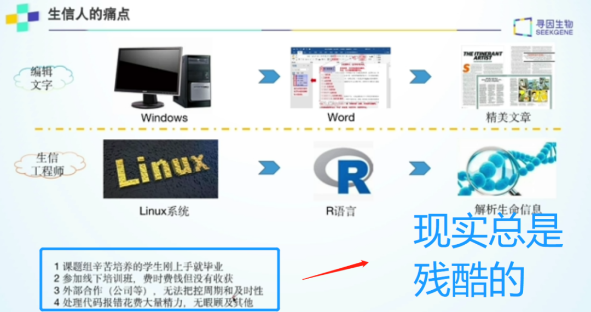
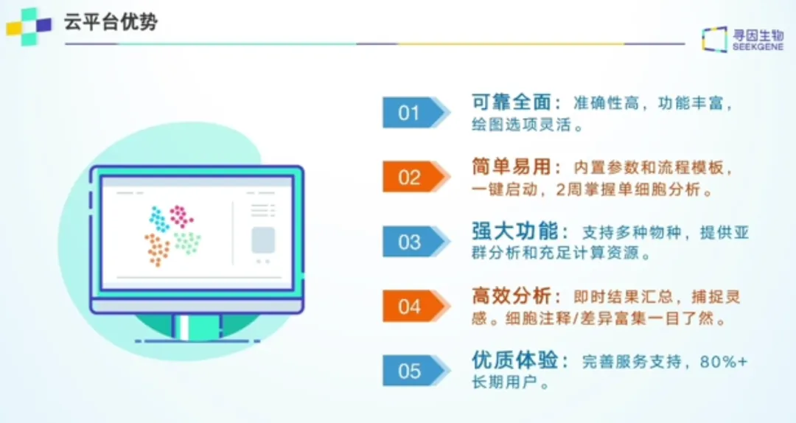
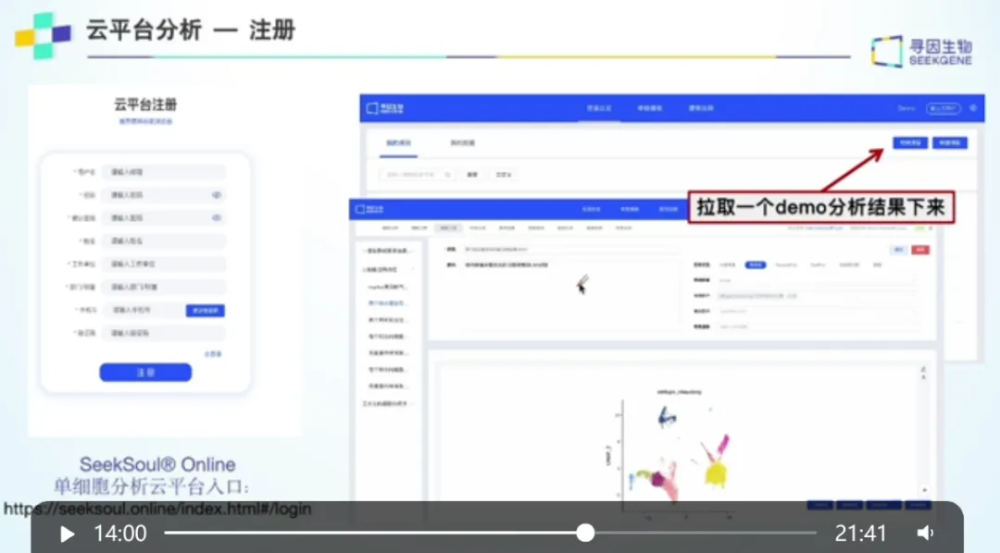

零代码单细胞| 云平台介绍
原文：https://mp.weixin.qq.com/s?__biz=MzAwMzIzOTk5OQ==&mid=2247510401&idx=1&sn=a616e5f1661bffff5afe3ed4b33b66e7&chksm=9b3cd0d1ac4b59c733761c5a3e8a07774eaf5131fd001ff0c68c814e3342b8e5b374380a16e1#rd 合集：单细胞云平台

科研利器SeekSoul Online单细胞云平台 及配置的**《2周教你学会单细胞生信全套分析》体系课程** 应需求问世，感谢大家的等待，准备好一键起航吧！
云平台访问链接：https://seeksoul.online/t_static/Biomamba/Biomamba.html
各位同学需要联系您的专属在线客服，获取demo数据后，进行操作学习。

第一讲：您身边的生信分析“专家”
精华复现

一、万事开头难，越基础越关键，越磨人


讲师提及：在细胞注释环节完成之前的工作是单细胞分析的根基，而为了完成这些基础工作，所需要学习的工具、所花费的周期是不能言说的“痛”。
**而从单细胞生信分析的核心目标来看，**如果能够把基础部分工作的精力节约出来，快速进入分析环节，才是真正展现科研实力的开始，也有利于未来科研成果的产出。
二、磨刀不误砍柴工，了解工具和使用规则很关键

关于SeekSoul ® Online单细胞云平台的开发历程和能力第一讲中讲师做了详细的介绍，还包含了学习活动、课程规划 等内容，方便大家有一个通盘的认知。当然大家也可以直接拖拽进度条至14：00开始进入实操环节。****
三、千呼万唤始出来，开始学习之旅吧

期待接下来的一同升级打怪，用最短的时间真正一同进阶为非人民币单细胞生信分析高阶玩家！